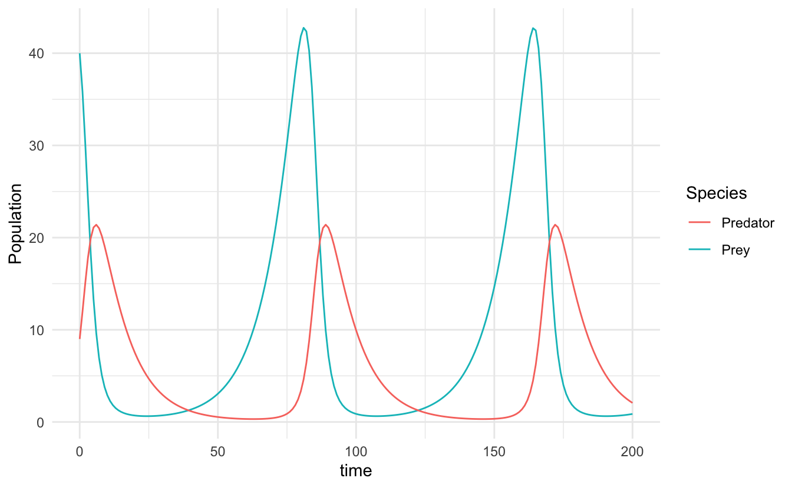
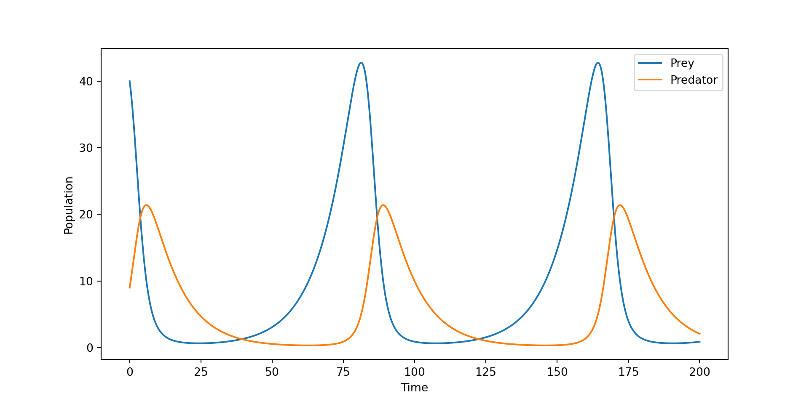
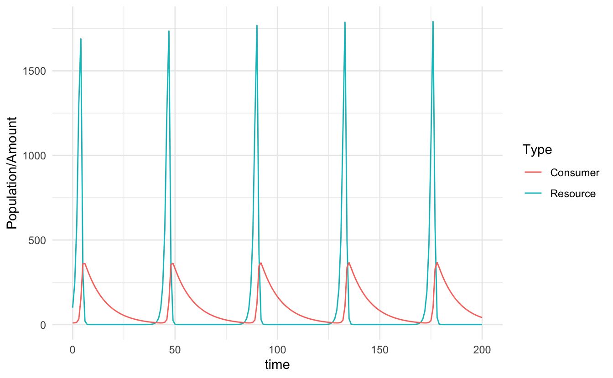
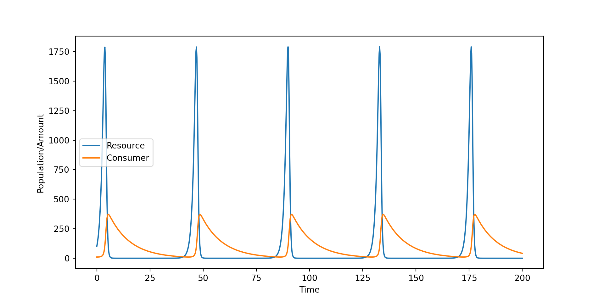

9 生态模型
9.1 微分方程模型
基于微分方程的生态模型可以预测基于物种共现或资源偏好和代谢交换的相互作用。与基于相关性的技术相比，这些模型可以提供强大的预测能力，因为它们可用于推断因果间关系和未来的群落动态。
Bansept 等人应用了微分方程模型，该模型考虑了微生物物种的双相生活方式，该模型由宿主相关相和环境相组成[62]。将这种建模框架扩展到群落环境中可能特别能提供与植物相关的微生物在其整个生命周期中经历不同的环境或时间定义的选择压力的信息。
9.2 Generalized Lotka-Volterra Model
参考资料：
https://github.com/yuhao-yang-cy/sci-simulations/blob/main/lotka-volterra-predator-prey-model.ipynb
A Tour of the Generalized Lotka-Volterra Model：四个讲座半严谨地介绍了 gLV 模型及其在群落生态学中的应用。在这本电子书中，作者都加入了可用于模拟从数学角度介绍的过程的代码。source code。
Theoretical Community Ecology：本资料是芝加哥大学 2020/2021 学年的理论群落生态学（ECEV 43900）研究生课程准备的（主讲人：Stefano Allesina ）。学习本教材需要熟悉微积分（多元积分、导数、链式法则）和线性代数（向量空间、特征值、特征向量）。此外，还需要具备良好的 R 工作知识（编写函数、使用 deSolve 和 tidyverse 软件包）。该课程以种群、群落和理论生态学课程中通常介绍的材料为基础，主要目标是建立一个解决理论群落生态学问题的工具箱，在入门课程和主要文献之间架起一座桥梁。source code
MIT opencourse: Systems biologly - Interspecies interaction：本讲座由 Jeff Gore 教授主讲，内容涉及捕食者-猎物相互作用和振荡的模型和实验。他从 Lokta-Volterra 模型开始，该模型既被称为 “糟糕的”（从数学角度讲），又被称为 “意义深远的”。
洛特卡-沃尔泰拉模型（Lotka-Volterra 模型）是一种著名的描述捕食者和猎物之间相互作用的数学模型1，用于研究生态系统中的种群动态。它由意大利数学家洛特卡（Alfred Lotka）和法国数学家沃尔泰拉（Vito Volterra）分别在20世纪初提出，并且被广泛应用于生态学和数学生物学领域。该模型基于两个基本假设：1）猎物的增长受到非捕食者相关因素的影响（如资源供应、自然死亡率等）；2）捕食者的增长受到猎物的存在和捕食率的影响。
在洛特卡-沃尔泰拉模型中，假设存在两个种群：猎物（Prey）和捕食者（Predator）。它的数学描述通常由一组耦合的微分方程表示，其中包括猎物种群的变化和捕食者种群的变化。模型的一般形式如下：
猎物的增长模型（Prey dynamics）：
\[\frac{dP}{dt} = rP - aP\cdot C\]
其中，\(P\) 表示猎物种群的数量，\(r\) 是猎物的内禀增长率2，\(a\) 是猎物受到捕食者影响的捕食率，\(C\) 表示捕食者种群的数量。
捕食者的增长模型（Predator dynamics）：
\[\frac{dC}{dt} = -sC + bP\cdot C\]
其中，\(C\) 表示捕食者种群的数量，\(s\) 是捕食者的死亡率3，\(b\) 是捕食者每捕食一单位猎物能够获得的增长量。
洛特卡-沃尔泰拉模型可以产生一系列有趣的动态行为，包括周期性波动、稳定的周期、混沌等，取决于参数的设定。这个模型在理论上和定量分析上都提供了一种理解捕食和被捕食者之间相互作用的方式，但也有一些局限性，例如未考虑环境因素的变化和其他种群互动方式。
gLV 模型（Generalized Lotka-Volterra Model）是对传统洛特卡-沃尔泰拉模型的扩展和泛化，用于描述多物种相互作用的复杂生态系统。与传统的捕食者-猎物模型不同，gLV 模型考虑了多个物种之间的相互关系，包括竞争、捕食、共生等各种相互作用。
gLV 模型的数学描述可以根据涉及的物种数量和相互作用的类型而有所不同。这些模型通常使用耦合的微分方程来表示不同物种的种群动态。例如，假设我们有 \(n\) 个物种，可以表示如下：
\(\frac{dN_i}{dt} = r_i N_i \left(1 - \sum_{j=1}^n a_{ij} N_j\right)\)
其中，\(N_i\) 表示第 \(i\) 个物种的种群数量，\(r_i\) 是内禀增长率，\(a_{ij}\) 是描述物种 \(i\) 对物种 \(j\) 的影响系数。这些系数可以表示为竞争系数、捕食率、共生关系等等，取决于实际的生态系统研究。
gLV 模型的一个重要应用是在生态系统的稳定性和动态行为分析。通过调整不同物种之间的相互作用系数，可以模拟和预测多种物种在生态系统中的相互作用和种群动态，以及可能出现的周期性波动、稳定状态、混沌等。
这种模型在生态学和生物学的研究中具有重要意义，可以帮助我们更好地理解自然界中物种之间的复杂关系，同时也有助于环境保护和资源管理等领域的决策。然而，需要指出的是，由于现实生态系统的复杂性，gLV 模型通常是一种理想化简化，实际中的生态系统往往受到更多因素的影响。
9.3 Consumer Resource Model
消费者资源模型根据已知或估计的资源吸收和转化率来预测生物体特定的增长率。这些可用于预测特定营养环境中的物种丰度、代谢相互作用和分类多样性。
消费者资源模型[68]明确考虑了不同生物体如何响应特定环境营养物质而生长（图 ）。因此，它可以通过描述消耗、转化和交换特定资源的生态后果，为代谢相互作用提供额外的预测能力。消费者资源模型已经生成了不同生态尺度的代谢相互作用机制和群落多样性的预测[69 , 70]，并且最近已应用于理解植物微生物组中的跨界相互作用[26]。此外，消费者资源建模框架可以与体外培养实验探索微生物组如何响应环境扰动的代谢基础，正如最近对土壤分离物集合的描述[71]。
Lotka-Volterra 模型和 Consumer-resource 模型都是生态学中的经典模型，用于描述种群之间的相互作用。尽管它们在某些方面类似，但它们的侧重点和建模方式有所不同。
9.3.1 Lotka-Volterra 模型
1. 基本概念： - Lotka-Volterra 模型是最早提出的用于描述物种之间相互作用的数学模型。它主要用于描述两个种群之间的捕食-被捕食关系（Predator-Prey Model）。 - 该模型由两个一阶微分方程组成，分别描述捕食者和被捕食者种群的动态变化。
2. 方程形式： - 被捕食者（如兔子）种群增长率方程： \(\frac{dN}{dt} = rN - aNP\) 其中： - (N) 是被捕食者种群大小。 - (r) 是被捕食者的自然增长率。 - (a) 是捕食者捕食被捕食者的效率。 - (P) 是捕食者种群大小。
捕食者（如狼）种群增长率方程： \(\frac{dP}{dt} = baNP - mP\)
其中：
- \(b\) 是捕食者通过捕食获得能量转化为后代的效率。
- \(m\) 是捕食者的死亡率。
3. 假设： - 捕食者的种群变化完全依赖于被捕食者的数量。 - 被捕食者的增长受到捕食者的捕食压力影响。 - 没有考虑环境资源的有限性和竞争。
9.3.2 Consumer-Resource 模型
1. 基本概念： - Consumer-resource 模型扩展了 Lotka-Volterra 模型，特别关注资源（例如食物、栖息地）与消费者（例如动物、植物）的相互作用。 - 该模型更为通用，适用于描述任何生物与其所消耗资源之间的关系，而不仅限于捕食-被捕食关系。
2. 模型形式： - 基本形式可以表示为： \(\frac{dR}{dt} = f(R) - g(R, C)C\)
\[ \frac{dC}{dt} = e g(R, C)C - dC \]
其中： - \(R\) 是资源的数量。 - \(C\) 是消费者的数量。 - \(f(R)\) 是资源的增长函数，可以是常数（非再生资源）或依赖资源量的函数（再生资源）。 - \(g(R, C)\) 是消费者从资源中获得的摄食率，通常依赖于资源和消费者的数量。 - \(e\) 是消费者将摄食转化为自身增长的效率。 - \(d\) 是消费者的死亡率。
3. 假设： - 资源可能是有限的，并且可以根据不同的增长模式（线性、饱和等）再生或消耗。 - 资源的消耗率可以依赖于资源和消费者的数量，允许建模更复杂的动态（例如，功能反应曲线）。 - 可以考虑资源竞争、消费者之间的相互作用等更复杂的生态过程。
9.3.3 区别总结
- 建模对象：
- Lotka-Volterra 模型：主要用于描述捕食者和被捕食者之间的关系。
- Consumer-resource 模型：更广泛地适用于描述任何资源-消费者系统，包括但不限于捕食-被捕食关系。
- 复杂性：
- Lotka-Volterra 模型：相对简单，只考虑捕食和被捕食的直接交互作用。
- Consumer-resource 模型：可以描述更复杂的生态过程，例如资源再生、不同类型的摄食率和消费者之间的竞争。
- 应用范围：
- Lotka-Volterra 模型：通常应用于简单的两种群系统。
- Consumer-resource 模型：可以应用于更复杂的生态系统，适用于多种群、多资源的情境。
下面是使用 R 和 Python 分别建立 Lotka-Volterra 模型和 Consumer-Resource 模型的示例代码，并包含动态变化过程的可视化。
9.3.4 1. Lotka-Volterra 模型
9.3.4.1 R 代码示例
# 需要的包
library(deSolve)
library(ggplot2)
# Lotka-Volterra 模型方程
lv_model <- function(t, state, parameters) {
with(as.list(c(state, parameters)), {
dPrey <- r * Prey - a * Prey * Predator
dPredator <- b * Prey * Predator - m * Predator
return(list(c(dPrey, dPredator)))
})
}
# 参数设置
parameters <- c(r = 0.1, a = 0.02, b = 0.01, m = 0.1)
# 初始状态
state <- c(Prey = 40, Predator = 9)
# 时间序列
times <- seq(0, 200, by = 1)
# 使用 ode 函数求解
out <- ode(y = state, times = times, func = lv_model, parms = parameters)
out <- as.data.frame(out)
# 可视化
ggplot(out, aes(x = time)) +
geom_line(aes(y = Prey, color = "Prey")) +
geom_line(aes(y = Predator, color = "Predator")) +
labs(y = "Population", color = "Species") +
theme_minimal()
9.3.4.2 Python 代码示例
import numpy as np
import matplotlib.pyplot as plt
from scipy.integrate import odeint
# Lotka-Volterra 模型方程
def lv_model(state, t, r, a, b, m):
Prey, Predator = state
dPrey = r * Prey - a * Prey * Predator
dPredator = b * Prey * Predator - m * Predator
return [dPrey, dPredator]
# 参数设置
r = 0.1 # 被捕食者的增长率
a = 0.02 # 捕食者捕食效率
b = 0.01 # 捕食后生成捕食者的效率
m = 0.1 # 捕食者的死亡率
# 初始状态
state0 = [40, 9]
# 时间序列
t = np.linspace(0, 200, 1000)
# 使用 odeint 求解
solution = odeint(lv_model, state0, t, args=(r, a, b, m))
Prey, Predator = solution.T
# 可视化
plt.figure(figsize=(10, 5))
plt.plot(t, Prey, label='Prey')
plt.plot(t, Predator, label='Predator')
plt.xlabel('Time')
plt.ylabel('Population')
plt.legend()
plt.show()
9.3.5 2. Consumer-Resource 模型
9.3.5.1 R 代码示例
# 需要的包
library(deSolve)
library(ggplot2)
# Consumer-Resource 模型方程
cr_model <- function(t, state, parameters) {
with(as.list(c(state, parameters)), {
dResource <- r * Resource - c * Resource * Consumer
dConsumer <- e * c * Resource * Consumer - m * Consumer
return(list(c(dResource, dConsumer)))
})
}
# 参数设置
parameters <- c(r = 1.0, c = 0.01, e = 0.1, m = 0.1)
# 初始状态
state <- c(Resource = 100, Consumer = 10)
# 时间序列
times <- seq(0, 200, by = 1)
# 使用 ode 函数求解
out <- ode(y = state, times = times, func = cr_model, parms = parameters)
out <- as.data.frame(out)
# 可视化
ggplot(out, aes(x = time)) +
geom_line(aes(y = Resource, color = "Resource")) +
geom_line(aes(y = Consumer, color = "Consumer")) +
labs(y = "Population/Amount", color = "Type") +
theme_minimal()
9.3.5.2 Python 代码示例
import numpy as np
import matplotlib.pyplot as plt
from scipy.integrate import odeint
# Consumer-Resource 模型方程
def cr_model(state, t, r, c, e, m):
Resource, Consumer = state
dResource = r * Resource - c * Resource * Consumer
dConsumer = e * c * Resource * Consumer - m * Consumer
return [dResource, dConsumer]
# 参数设置
r = 1.0 # 资源的增长率
c = 0.01 # 消费者消耗资源的效率
e = 0.1 # 消费者将资源转化为自身的效率
m = 0.1 # 消费者的死亡率
# 初始状态
state0 = [100, 10]
# 时间序列
t = np.linspace(0, 200, 1000)
# 使用 odeint 求解
solution = odeint(cr_model, state0, t, args=(r, c, e, m))
Resource, Consumer = solution.T
# 可视化
plt.figure(figsize=(10, 5))
plt.plot(t, Resource, label='Resource')
plt.plot(t, Consumer, label='Consumer')
plt.xlabel('Time')
plt.ylabel('Population/Amount')
plt.legend()
plt.show()
9.3.6 总结
- Lotka-Volterra 模型：通过描述捕食者和被捕食者的相互作用，展示了两者种群的动态变化。
- Consumer-Resource 模型：通过描述资源与消费者的相互作用，展示了资源和消费者数量的动态变化。
通过这些代码，你可以看到不同模型的种群动态，了解它们在不同生态学情境下的应用。